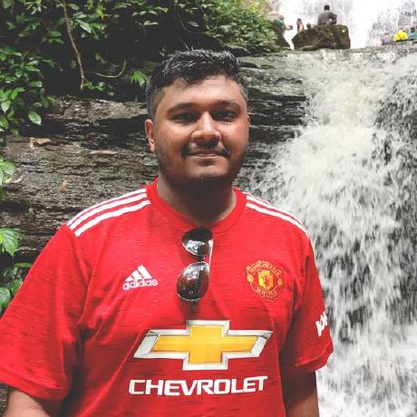

|  |
MUBASHIR MOHSIN Computer Science Engineer |
Email |
mubashir.mohsin.42884@gmail.com |
Phone No. |
+880 1726331487 |
My Profiles |
|
About Me |
I am 22 years old living in Mirpur, Dhaka.
I am studying Computer Science in AIUB and this is my 9th Semester.
I am looking for an entry level job that suits to my exploits.
My current CGPA is 3.75 |
Skill Sets |
- Progaming Skills :
- Proficient in C++, Java, Python and C#
- Familiar with C, Assembly Language, R and Ruby
- Developing Skills :
- Developed desktop applications using C#
- Developed several projects using AutoCad, NI Multisim and Visual Studio
- Developing an web-based application using PHP, JavaScript and CSS
- Additional Skills :
- Proficient in using Microsoft 365 and Google Workspace.
- Proficient in using Adobe Photoshop, Illustrator and Premiere Pro.
- Proficient in typing articles, research papers, resume and contents. RPM ~75wpm.
- Fluent in speaking and writing English.
|
Educational Background |
| Certificates |
Institution |
Date |
Result |
| Secondary School Certificate (Science) |
Dhaka Residential Model College |
March, 2017 |
GPA 5.00 |
| Higher Secondary Certificate (Science) |
Dhaka Residential Model College |
July, 2019 |
GPA 5.00 |
| B.Sc. in Computer Science |
American International University-Bangladesh |
2020-Present |
CGPA 3.75 |
|
Works & Experinces |
- Projects :
-
Title: Banking Management System using Java.
Supervised by: Farzana Alam, Assistant Professor, CS, AIUB
-
Title: Finance Management System using C-sharp.
Supervised by: Victor Stany Rozario, Assistant Professor, CS, AIUB
-
Title: Disability Management System in Software Development.
Supervised by: Farzana Alam, Assistant Professor, CS, AIUB
-
Title: Automatic Parking Environment for University Campus.
Supervised by: Md. Anwarul Kabir, Associate Professor, CS, AIUB
- Research Papers :
Non-core
- Prospect of Juvenile Delinquency Amidst Teenagers in Dhaka (Unpublished)
- Preventing Gender-Based ViolenceWith Technological Support (Unpublished)
- Causes and Effects of CyberbullyingIn Bangladesh (Unpublished)
Core
- Optimization of Visual Reality using Holographic 3D imprint in AI (Unpublished)
- FUTURISMA – A bike of the future (Unpublished)
- A social application for the disabled people of our society (Unpublished)
|
Hobbies & Interests |
- Reading science articles, books, and thesis papers
- Playing and discussing football
- Drawing and sketching
- Watching movies and TV-series
- Collecting rare collectibles, comics, and figurines
- Travelling both inside and outside the country
- Listening to various genres of music and songs
|